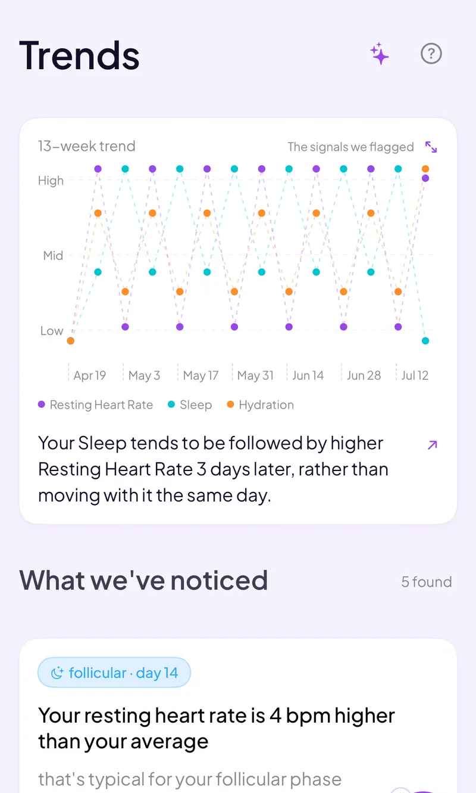

Track Thyroid Symptoms and Your Cycle: 2026 App Guide
If you're managing a thyroid condition, you've probably noticed your energy, mood, or cycle don't feel steady month to month. This guide covers why thyroid conditions and menstrual cycles are worth tracking together, 5 apps for logging both, and what's actually useful to bring to your next appointment. No app can read your thyroid levels. What one can do is help you keep a cleaner record between the bloodwork.
Full Transparency
This guide is published by Holland Neurotech Inc., the company behind Go Go Gaia. Go Go Gaia is one of the five apps compared here. We included it because we think it's a strong option for this use case, and we've been honest about its limitations too. Every app on this list has real strengths, and the best one for you depends on how you already manage your thyroid care.
Quick Answer: Which App Should You Use?
No app measures thyroid hormone levels. That stays with your doctor and a blood draw. Here are the tracking apps by use case:
- For the most customizable symptom log: Bearable. Build your own tracking fields for anything, popular in chronic-illness communities
- For a thyroid-specific app tied to a care service: Paloma Health. Built around their own telehealth thyroid care
- For a privacy-first cycle tracker with custom tags: Clue. Add your own symptom tags to a science-first period tracker
- For a broader health-record app: CareClinic or Guava. General symptom, medication, and appointment logging
- For cycle, symptoms, energy, mood, and sleep in one app: Go Go Gaia. All-in-one tracking without a thyroid-specific focus
How We Picked These Apps
We shortlisted the 5 apps compared below from what people managing thyroid conditions actually use to log symptoms and their cycle, and compared them on custom symptom fields, whether logs connect to cycle data, how much setup they require, and whether they're built around a specific care service. Pricing was re-verified on the App Store in July 2026, and we read each app's current privacy policy rather than relying on its marketing pages.
Full disclosure: this site is published by Holland Neurotech Inc., the maker of Go Go Gaia. The list isn't ranked, each app is presented as the fit for a specific need, we include our own app only where it genuinely belongs, and we say plainly when a competitor is the better choice.

Medical Disclaimer
This article is for educational and informational purposes only and does not constitute medical advice. It is not a substitute for lab work, a diagnosis, or treatment guidance, and no app mentioned here can measure thyroid hormone levels or tell you whether a medication dose is right. Tracking apps record patterns you can bring to a healthcare provider. They don't interpret bloodwork or replace it. Always talk with your doctor or endocrinologist about your symptoms, your labs, and any changes to your care. Individual experiences vary, and what works for one person may not work for another.
Why Track Thyroid Symptoms and Your Cycle Together
Thyroid conditions are common in women, and the thyroid and reproductive system are known to interact. The thyroid gland produces hormones that affect metabolism, energy, and mood, and it shares hormonal signaling pathways with the menstrual cycle. The Cleveland Clinic and the NIH's Office on Women's Health both note that thyroid disorders occur far more often in women than men, and that thyroid problems can affect cycle regularity[1][2].
What that means day to day varies a lot from person to person. Some people notice their energy or mood shifts differently across their cycle once a thyroid condition is in the picture. Others don't notice much overlap at all. Because the pattern is individual, a personal log tends to be more useful than a general rule.
This guide is written for two situations: you've already been diagnosed with a thyroid condition and want a cleaner way to log symptoms alongside your cycle, or you're already working with a doctor and want a better record to bring to your next appointment. It isn't a guide to figuring out whether you have a thyroid problem. That determination comes from bloodwork, not a symptom app, and it's outside what any tracker can tell you.
How We Compared These Apps
We compared each app on its App Store listing, published pricing, privacy policy, and recent user reviews, all checked in July 2026. We did not run a clinical study, and we haven't hands-on tested every feature of every app. Full disclosure: we make Go Go Gaia, one of the five apps here.
For this use case, we weighted three things most heavily: whether you can log custom symptoms in your own words, whether the app connects those logs to your cycle, and how much setup time it asks for. We also noted which apps are tied to a specific care service, since that changes what you're signing up for.
The 5 Apps Compared
The five apps below split into three groups: general symptom loggers you adapt (Bearable, CareClinic), a thyroid-specific app tied to a care service (Paloma Health), and cycle-first or all-in-one trackers (Clue, Go Go Gaia). None of them can test your thyroid for you, though some — including Go Go Gaia — can log lab results you already have. The right pick depends on how much customization you want and whether you're open to a bundled care service.
For the Most Customizable Symptom Log: Bearable
Best if you want: Full control over what you track, with fields you define yourself for symptoms, medications, and factors like sleep or stress.
Key Features
- Fully custom symptoms and factors, rated on scales you set up
- Medication and supplement logging with reminders
- "Impacts" view that correlates your factors with your ratings over time
- Optional period tracking module
- Sleep and activity data import from Apple Health and Google Fit
Strengths
- Genuinely the most customizable symptom tracker on this list, and it's popular in chronic-illness communities for exactly that reason
- You can name your own thyroid-related symptoms (fatigue, brain fog, hair changes) instead of picking from a fixed list
- Generous free tier and strong app store ratings
- GDPR-compliant and states it doesn't sell data
- Cross-platform (iOS and Android)
Limitations
- Setup takes real time. Building out custom fields is worth it, but it's not a five-minute job
- Cycle tracking is an add-on module, not the core focus, so there's no phase prediction depth
- No nutrition tracking
Who Should Choose This
- You manage more than one condition alongside your thyroid and want one flexible log for everything
- You're comfortable spending an evening on setup for a payoff later
- You need Android support
Pricing
Free (generous tier), Premium ~$34.99/year or ~$6.99/month. Available on iOS and Android.
For Thyroid-Specific Tracking Tied to Care: Paloma Health
Best if you want: A thyroid-focused app that connects your logs to Paloma's own telehealth thyroid care service.
Key Features
- Symptom logging built around common thyroid-related complaints
- Direct link to Paloma's telehealth appointments and labs, ordered and reviewed through their platform
- Educational content focused specifically on thyroid conditions
- Care coordination with Paloma's own clinicians and dietitians
Strengths
- The tracking experience is built specifically around thyroid symptoms, which is rare, most trackers are general-purpose
- If you want tracking and clinical care in one relationship, the app and the service are designed to work together
- Content is written for a thyroid-specific audience rather than general wellness
Limitations
- The app is tied to Paloma's care service. If you already have your own doctor or endocrinologist, you may be tracking symptoms in an app built to funnel you toward a different provider relationship
- No menstrual cycle tracking as a core feature, so pairing thyroid symptoms with cycle data isn't the focus
- Full features generally require being a Paloma patient, not just an app download
Who Should Choose This
- You're looking for a telehealth thyroid care provider and want tracking bundled with that relationship
- Thyroid-specific content and terminology matter more to you than cycle integration
- You're comfortable with a care-service model rather than a standalone tracker
Pricing
App download is free. Full care features are tied to Paloma's telehealth service, which involves separate consultation and lab pricing. Check current pricing on their website before signing up. Available on iOS and Android.
For a Privacy-First Cycle Tracker With Custom Tags: Clue
Best if you want: A clean, science-first cycle tracker where you add your own tags for thyroid-related symptoms.
Key Features
- Cycle tracking with phase information and predictions
- Custom tags you name yourself, like "low energy" or "hair shedding"
- 30+ built-in tracking categories including energy, mood, and sleep
- Science-backed content reviewed by researchers
- GDPR-compliant (Berlin-based, EU privacy standards)
Strengths
- Clue is based in Germany and operates under EU GDPR rules, with a strong, long-standing public stance on data privacy
- Custom tags let you log thyroid-specific symptoms in your own words
- Clean, minimal interface that's quick to log in
- Cross-platform (iOS and Android)
Limitations
- Pattern analysis is limited. You'll mostly spot trends by scrolling back through past cycles yourself
- No connection between your tags and sleep, exercise, or other lifestyle data
- Free users see regular prompts to upgrade to Clue Plus
Who Should Choose This
- You want a cycle tracker first and a symptom log second
- Privacy track record is a top priority for you
- You're comfortable reviewing your own data for patterns rather than getting automated insights
Pricing
Free (with upgrade prompts), Clue Plus ~$39.99/year. Available on iOS and Android.
For a Broader Health Record: CareClinic
Best if you want: A general health-record app that logs symptoms, medications, and appointments in one place, not built for any single condition.
Key Features
- Custom symptom and factor tracking with charts
- Medication and supplement reminders and logs
- Appointment notes and health record storage
- Basic correlation reports between logged factors
- Period tracking as one of many available modules
Strengths
- Broad scope covers thyroid symptoms, medications, and general health records without needing multiple apps
- Useful if you're managing thyroid care alongside other ongoing conditions
- Guava, a similar general health-tracking app, is worth considering too if CareClinic's interface doesn't click for you
Limitations
- The interface can feel busier than a purpose-built cycle or symptom app, since it's trying to cover a lot of ground
- Cycle tracking is one module among many rather than a core focus
- Some deeper reporting and analysis features sit behind a premium subscription
Who Should Choose This
- You're tracking thyroid symptoms alongside other health conditions or a longer medication list
- You want everything, including appointment notes, in one health record
- You don't mind a more utilitarian interface in exchange for breadth
Pricing
Free (core features), premium tiers for advanced reports, pricing varies by plan. Available on iOS and Android.
For Cycle, Symptoms, Energy, Mood, and Sleep in One App: Go Go Gaia
Best if you want: One app that tracks your cycle, symptoms, energy, mood, sleep, and habits together, without a thyroid-specific focus.
Key Features
- Cycle tracking with phase context built in
- Custom habits and symptom logs, including energy, mood, and sleep, as 1-tap entries
- Correlation insights that connect your logs to cycle phase and other tracked metrics
- Passive wearable data (Apple Watch, Oura, Garmin, WHOOP) fills in sleep and activity without manual entry
- Voice logging, including on Apple Watch

Strengths
- Cycle, symptoms, energy, mood, sleep, and habits live in one free app, so the data streams you'd want to compare are already side by side
- Low daily friction, which matters if fatigue is one of the symptoms you're logging
- No ads, no data selling
Limitations
- iOS only, no Android version yet
- Not thyroid-specific. There's no dedicated thyroid content or terminology built in, you're using general symptom and habit fields
- Newer app with a smaller community than Clue or Bearable
- Some advanced features, including the full AI assistant, require premium ($9.99/month or $49.99/year)
Who Should Choose This
- You want your cycle and general symptoms logged in the same app without setting up a lot of custom fields
- You wear an Apple Watch, Oura, Garmin, or WHOOP and want sleep data included automatically
- You're on iPhone and prefer one app over juggling two or three
Pricing
Free to download, most features included. Premium is $9.99/month or $49.99/year for full AI insights and advanced correlations. Available on the iOS App Store.
Feature Comparison Table
Quick read of the table: Bearable and CareClinic are the most flexible general symptom loggers, Paloma Health is the only one built specifically around thyroid care, Clue is the privacy-first cycle option, and Go Go Gaia bundles cycle plus general symptom, energy, mood, and sleep logging in one app. Here's the full picture (✅ full support, ⚠️ partial, 🔒 premium only, ❌ not available):
| Feature | Bearable | Paloma Health | Clue | CareClinic | Go Go Gaia |
|---|---|---|---|---|---|
| Cycle & phase tracking | ⚠️ Optional module | ❌ Not a focus | ✅ Core focus | ⚠️ One module | ✅ With phase context |
| Custom symptom fields | ✅ Fully custom | ⚠️ Thyroid-focused presets | ✅ Custom tags | ✅ Custom factors | ✅ Custom habits |
| Thyroid-specific content | ❌ General only | ✅ Core focus | ❌ General only | ❌ General only | ❌ General only |
| Tied to a care service | ❌ Standalone | ✅ Paloma telehealth | ❌ Standalone | ❌ Standalone | ❌ Standalone |
| Correlation insights | ✅ "Impacts" view | ⚠️ Basic | ❌ Manual review | ⚠️ Basic reports | ✅ Multi-factor |
| Mood & energy logging | ✅ Custom scales | ⚠️ Symptom checklist | ✅ Via tags | ✅ Custom factors | ✅ Custom habits |
| Sleep & wearable data | ✅ Health app import | ❌ None | ⚠️ Basic Apple Health | ⚠️ Basic | ✅ Watch, Oura, Garmin, WHOOP |
| Doctor-ready export | 🔒 Premium | ✅ Shared with care team | ⚠️ Limited | ✅ Reports | ✅ Free |
| Free tier quality | ✅ Generous | ⚠️ Care features cost extra | ⚠️ Upgrade prompts | ✅ Core free | ✅ Generous |
| Platforms | iOS + Android | iOS + Android | iOS + Android | iOS + Android | iOS only |
| Best for | Full customization | Thyroid-specific care | Privacy-first cycle | Broad health record | Cycle + general symptoms |
When Another App Is the Better Choice
Go Go Gaia isn't the right pick for everyone reading this, and several of these apps win outright for specific situations. Here's where we'd honestly point you elsewhere.
Choose Paloma Health if you want thyroid care bundled with tracking
If you're looking for a telehealth provider who specializes in thyroid conditions and want your symptom logs to feed directly into that care relationship, Paloma's app and service are built to work together. It's also on Android, which Go Go Gaia isn't.
Choose Bearable if you're managing multiple conditions and want deep customization
If your thyroid condition is one of several things you're tracking, alongside anxiety, migraines, or gut issues, Bearable's fully custom fields and "Impacts" correlation view are the strongest general-purpose option on this list. Budget an evening for setup.
Choose Clue if privacy is your top priority
Clue's privacy track record is genuinely the strongest among mainstream cycle trackers. If you mostly want a clean period tracker with a few custom tags for symptoms like fatigue or hair changes, Clue does that well.
Choose CareClinic or Guava if you want one app for your whole health picture
If you're already juggling appointments, medications, and multiple conditions, a general health-record app can hold all of it in one place, with cycle tracking as one piece rather than the center.
What to Log Before Your Next Appointment
Keep the daily log to five things: energy, mood, sleep, weight if your doctor tracks it, and your period dates and flow. That's a record most doctors find genuinely useful, and it doesn't require guessing at anything a lab test would tell you. Here's how to make it work:
- Log the same few things every day. A short, consistent log beats a detailed one you keep for a week and abandon. One tap or a 1-to-5 rating for each item is enough.
- Note your period dates and flow alongside everything else. The point of tracking both together is seeing them side by side, not lining up two separate logs by hand later.
- Write down anything unusual in a line, not a diagnosis. "Rough week, didn't sleep well" is useful. Trying to decide what a symptom means is not something a log needs to do, that's the conversation for your appointment.
- Track around dose changes or lab draws if you have them. A few weeks of logs before and after a change gives your doctor more context than a single data point.
- Bring the record, not your memory. "Here's six weeks of energy and cycle data" is a more useful opener than trying to recall how you felt last month. What your doctor does with that pattern is their call, not something the log decides for you.
A tracking app handles two parts of this for you: a 1-tap log like Go Go Gaia's custom habits keeps the daily ask small, and correlation insights line up your cycle data with everything else automatically instead of leaving you to cross-reference two calendars. A plain notes app or a paper log works too, if you'll actually keep it up. The app's advantage is mostly about friction: less effort usually means a longer streak, and a longer streak means a more useful record.
Frequently Asked Questions
The short version: no app runs the thyroid test itself, Paloma Health is the closest thing to a thyroid-specific app, and most people bring at least one full cycle of logs to an appointment. The details:
Can an app track my thyroid levels?
Thyroid hormone levels only show up on bloodwork, and reading that bloodwork is your doctor's job. What a tracking app can do is log the day-to-day symptoms and cycle changes you notice between appointments, which gives your doctor more to work with than memory alone.
Is there an app made specifically for thyroid and period tracking?
Paloma Health's app is the closest thing to thyroid-specific, though it's built around their own care service. For a standalone tracker that logs thyroid-related symptoms and your cycle together, Bearable, Clue, CareClinic, Guava, and Go Go Gaia all work, each with a different approach to custom logging.
Why do thyroid conditions and menstrual cycles seem connected?
The thyroid and the reproductive system share hormonal signaling pathways, and thyroid conditions are common in women. That overlap is well established in the medical literature, though how it plays out day to day varies by person, which is exactly why a personal log is useful.
What should I log if I'm already diagnosed with a thyroid condition?
Keep it simple: energy, mood, sleep, weight if your doctor tracks it, and your period dates and flow. A short daily log beats a detailed one you abandon after a week. The goal is a clean record you can hand your doctor, not a diagnosis you generate yourself.
How long should I track before bringing data to an appointment?
Most people bring at least one full cycle of logs, and two to three cycles gives a clearer picture. If you've had a recent dose change or lab draw, a log covering the weeks either side of it gives your doctor more context than a single day's snapshot.
Should I track thyroid symptoms and my cycle in the same app?
It's usually easier. If your symptom log and your period dates live in separate apps, you end up matching dates by hand to see any overlap. One app that handles both removes that step, though it's not a requirement if you already have a system that works.
Can tracking symptoms tell me if my thyroid medication dose is right?
Dose decisions come from bloodwork and your doctor's judgment, not from a symptom app. A log can show your doctor how you've been feeling since your last dose change, but it isn't a substitute for the lab test itself.
Final Thoughts
Thyroid conditions and your cycle are worth tracking together mainly because the pattern is personal, and a log shows you your own version of it instead of a general rule. No app replaces the bloodwork. What a log does is fill in the weeks between appointments with something more solid than memory.
Pick the app that matches how you already manage your care: Bearable for full customization, Paloma Health if you want thyroid-specific care bundled in, Clue for a privacy-first cycle tracker, CareClinic or Guava for a broader health record, and Go Go Gaia if you want cycle, symptoms, energy, mood, and sleep together in one app.
Still deciding? Just pick one and log for a few weeks. See what shows up before your next appointment.
A Dated Symptom Log Is More Useful Than Memory
That's the article's whole method in one line. A few weeks of energy, mood, sleep, and cycle logs gives your doctor something concrete to look at, instead of you trying to recall how the last month felt.
Start a Symptom Log for Your Next Appointment
Set up energy, mood, and sleep as 1-tap habits, and bring whatever you've logged to your next appointment.
Related Articles
References
- Cleveland Clinic. "Thyroid Disease." my.clevelandclinic.org
- Office on Women's Health. "Thyroid disease." U.S. Department of Health and Human Services. womenshealth.gov